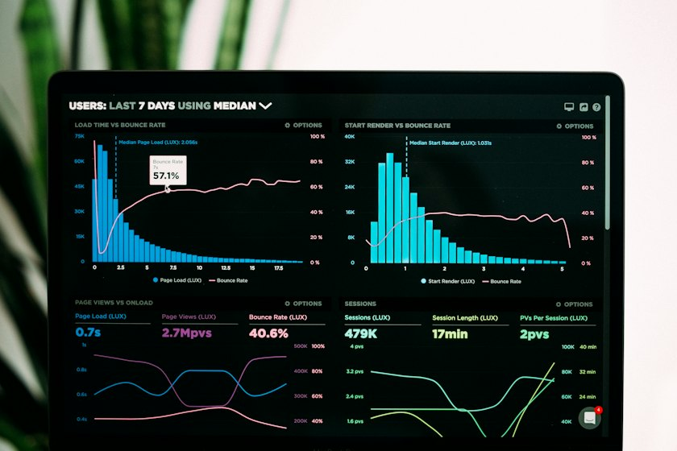

Peace Ojehanon
I keep networks, data, and the people who rely on them connected.
IT operations professional working across network engineering, technical support and data, from a Lagos ISP serving 3M+ subscribers to a Glasgow MSc in Big Data Technologies.
A career built where infrastructure meets people
My work has always come back to one thing: keeping systems, and the people who depend on them, connected. I started out as a fibre splicing and networking intern at the University of Benin's International ICT Centre, ran IT for a state agency and then a revenue-collection firm in Asaba, and spent three years in the network operations centre of a Y Combinator-backed wireless and fibre ISP in Lagos, configuring BGP peering and bringing new base stations online for a network serving 3M+ subscribers.
Since moving to the UK I've completed an MSc in Big Data Technologies while working front-line support roles. Along the way I've tracked demand notices worth over ₦94 million and reconciled payments against bank statements, built a rerun-safe audio data pipeline on Google Cloud for my dissertation, and rewritten and maintained my NOC team's base station setup guides.
I'm drawn to problems that sit between networks, data and cloud, and I try to leave everything better documented than I found it.

What I work with
Grouped by domain and backed by the roles and study below. Where I'm a beginner, I say so.
Networking
IT support & service management
Cloud & big data
Data & analytics
Programming
Ways of working
Where I've been
Network operations, data and support work across Nigeria and the UK, with study running alongside it.
Operations Customer Expert
workJan 2026 to presentFirst-line customer and technical support, mostly by phone, in a UK bank's personal banking department. I work within strict quality and audit frameworks where every case is logged and traceable, and I flag recurring issues to team leads.
Guest Service Agent
workMar 2024 to Jan 2026Front desk at a 24/7 hotel and first response for faults on POS terminals, key-card systems and guest devices. Reworked the escalation flow between reception, housekeeping and maintenance, with no authority over any of them: guest satisfaction rose to 95% and complaints fell by about a quarter. Held alongside full-time MSc study.
MSc Big Data Technologies
studyJan 2024 to Jun 2025Graduated with Merit in July 2025. Modules in cloud computing, big data platforms, IoT, AI and machine learning, data visualisation and data ethics. Dissertation: a rerun-safe audio data pipeline on Google Cloud.
Network Operations Engineer
workNov 2020 to Dec 2023Ran 24/7 NOC monitoring of a multi-state wireless and fibre network, resolving around 85% of critical incidents within SLA, and gave L1 to L2 support to 200+ internal staff, escalating to L3 and R&D. Configured a new BGP peering session with AMS-IX through MainOne on the edge router (IPv4 and IPv6). Did the backend configuration and testing for each site in a 25-site base station rollout in 2022: MikroTik builds (OSPF, VLANs, hotspot servers, NAT), firmware, credential hardening and public IPs. Rewrote and maintained the team's base station setup guides, and compiled and presented the NOC's weekly KPI and incident reports to management.
Database & IT Analyst
workOct 2019 to Oct 2020Sole IT support at a consulting firm running revenue collection for Delta State's signage agency. Tracked demand notices worth over ₦94 million and reconciled payments against bank statements across 25 local government areas, in SQL and MySQL. Rebuilt the monthly reports around what finance actually asked, cutting follow-up queries by about 60%.
IT Officer
workNov 2018 to Oct 2019Ran day-to-day IT across departments (endpoints, printers, routers, VLAN and firewall security), improving system uptime by around 30%, and trained staff on troubleshooting and security awareness.
BSc Computer Science
study2014 to 20182:1. Final-year group project, which I led: a hotel revenue decision support system in PHP and MySQL, graded A.
Intern, Fibre Splicing and Networking
workMay 2017 to Aug 2017Where the networking started: my first hands-on technical role.
Selected projects
MSc coursework, network engineering at work, and my BSc group project.
Synthesized audio database pipeline
My MSc dissertation: a Python pipeline on Google Cloud that searches YouTube by topic through the YouTube Data API, downloads the audio only, reduces noise and normalises loudness, transcribes it with Speech-to-Text and stores transcripts and metadata in BigQuery. Reruns skip files already processed, temporary API errors are retried with back-off, and a SQL query checks the table for missing values, transcript lengths and topic balance. I measured the cleaning with signal-to-noise ratio and Mel cepstral distortion; the gains were modest and uneven, and I reported them that way. Real-time use was out of scope.
Image classifier: medicinal herbs
A convolutional neural network classifying 11 categories of Chinese medicinal herbs across about 17,000 images of mixed quality (blur, watermarks, busy backgrounds). Built a baseline model, then improved it with stronger data augmentation and a lower learning rate.
ISP network operations at scale
Three years in the NOC of a multi-state ISP serving 3M+ subscribers: a new BGP peering session with AMS-IX on the edge router, backend configuration and testing for new base stations (MikroTik, OSPF), fibre integrations and AirFiber link upgrades, and the NOC monitoring and weekly KPI reporting. A professional role, included to show the network work behind the certificates.
Salaries data pipeline prototype
MSc Big Data Platforms coursework: a pipeline prototype in Databricks with PySpark on a small salaries dataset, with a written design for running it on AWS.
IoT vehicle monitoring
MSc Internet of Things coursework: vehicle monitoring over MQTT with Node-RED and Google Cloud.
Top 5000 albums: exploratory analysis
MSc Data Visualisation coursework, my own individual work: an exploratory analysis of the Top 5000 albums of all time, written in R with ggplot2 in RStudio.
Hotel revenue decision support system
My BSc final-year project, built by a group of three that I led: a PHP and MySQL web app for hotel revenue management. Staff recorded bookings, damages, expenses and staff issues, and the manager's dashboard paired each chart with a suggested decision, such as the price each room type should go for based on monthly bookings. Graded A. Years before I'd work a hotel front desk myself.
In progress: ITIL 4 Foundation and JNCIA-Junos.
I write about networks & security
Articles I published on LinkedIn during my time in network operations. A few of them:
Let's talk about your network, data or support team
Open to roles across network operations, IT support, data and cloud. Based in Glasgow and open to relocating anywhere in the UK.